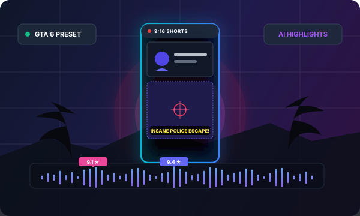

01 What It Does
Long GTA 6 gaming streams routinely span 3 to 6+ hours. Manually scrubbing through gigabytes of footage to discover peak moments is tedious and eats hours of an editor’s time. Stream Clips Skill is a specialized AI agent skill and automated pipeline created by AR LABS that automatically identifies interesting livestream moments and generates high-impact vertical clips (1080x1920) optimized for YouTube Shorts, TikTok, and Instagram Reels.
The workflow operates through a dual-stage detection engine:
-
✔
Acoustic & Energy Analysis: Continuously monitors decibel spikes, shouts, weapon fire, explosions, laughter, and high-frequency gameplay audio changes.
-
✔
Semantic Multimodal Transcript Scoring: Uses Whisper timestamped transcription coupled with Gemini 2.5 Flash or Claude 3.5 Sonnet to score spoken commentary for humor, story twists, close calls, and viral opening hooks.
-
✔
Intelligent 9:16 Video Reformatting: Dynamically converts widescreen 16:9 into vertical 9:16 format with split-screen webcam tracking or smart center crop.

Figure 1.1: Audio waveform spike identification mapped to 9:16 vertical crop coordinates.02 Key Features
AI-Assisted Highlight Discovery
Calculates decibel peaks and rapid excitement spikes to pinpoint intense action sequences, 5-star police pursuits, and high-speed stunts.
Interesting Moment Identification
Evaluates dialogue context and chat sentiment using LLM evaluation to find funniest streamer reactions, dialogue glitches, and clutch plays.
Vertical Video Generation
Auto-crops standard 16:9 widescreen into crisp 1080x1920 vertical video using configurable layouts (facecam split, center-crop, or blurred background).
Caption Support
Generates high-contrast kinetic ASS subtitles with animated word highlights, customizable font sizing, and creator-style outline styling.
Short-Form Content Workflow
Complete batch pipeline that bundles rendered clips with auto-generated viral titles, SEO descriptions, and hashtag hooks ready for immediate publishing across YouTube Shorts, TikTok, and Instagram Reels.
03 Requirements
The skill is designed to run locally on your own machine. Below are the actual dependencies based on the skill package:
| Requirement | Recommended Version | Notes |
|---|---|---|
| Python | 3.10+ |
Standard Python runtime with venv support. |
| FFmpeg | 6.0+ |
Must be added to system PATH for video cropping and subtitle rendering. |
| AI API Key | Gemini API or Anthropic | Google Gemini 2.5 Flash (free/paid tier) or Claude 3.5 Sonnet. |
| Python Packages | requirements.txt |
yt-dlp, whisper-timestamped, opencv-python, rich, pyyaml, pydantic. |
| Hardware | Any modern CPU / GPU | NVIDIA GPU with CUDA recommended for rapid Whisper transcription. |
ffmpeg -version04 Installation Steps
Follow these numbered steps to configure the skill on your local system:
Download stream-clips-skill.zip from the download section below and extract it into your projects folder:
cd path/to/stream-clips-skillIsolate dependencies by creating a dedicated Python environment:
# Create virtual environment
python -m venv venv
# On Windows:
venv\Scripts\activate
# On macOS/Linux:
source venv/bin/activateRun pip install against the included requirements.txt file:
pip install -r requirements.txtCopy the template .env.example to .env and add your API key:
# Copy environment template
cp .env.example .env
# Open .env and add your Gemini or Anthropic key:
# GEMINI_API_KEY="AIzaSy..."05 How to Use
You can run the Stream Clips Skill as a standalone CLI runner, or integrate it directly into an AI coding agent (such as Antigravity or Claude Code).
Scenario A: Process YouTube Stream VOD Directly
Pass the livestream YouTube link directly into the CLI tool:
python run_stream_clipper.py --url "https://youtube.com/watch?v=EXAMPLE_ID" --game gta6 --clips 5Scenario B: Process Local Video Recording with Split Webcam Layout
Reframes 16:9 gameplay with webcam stacked on top and action on bottom:
python run_stream_clipper.py --input "gta6_session_01.mp4" --min-score 8.5 --layout split --output ./clipsScenario C: AI Agent Skill Command
Drop the skill into your agent’s skills directory and trigger it via slash command:
/clip-stream "https://youtube.com/watch?v=..." --threshold 8.006 Download Package
Download the complete, production-ready package. Contains all runner scripts, templates, and agent documentation.
stream-clips-skill.zip
Complete GTA 6 highlight clipper codebase & configuration